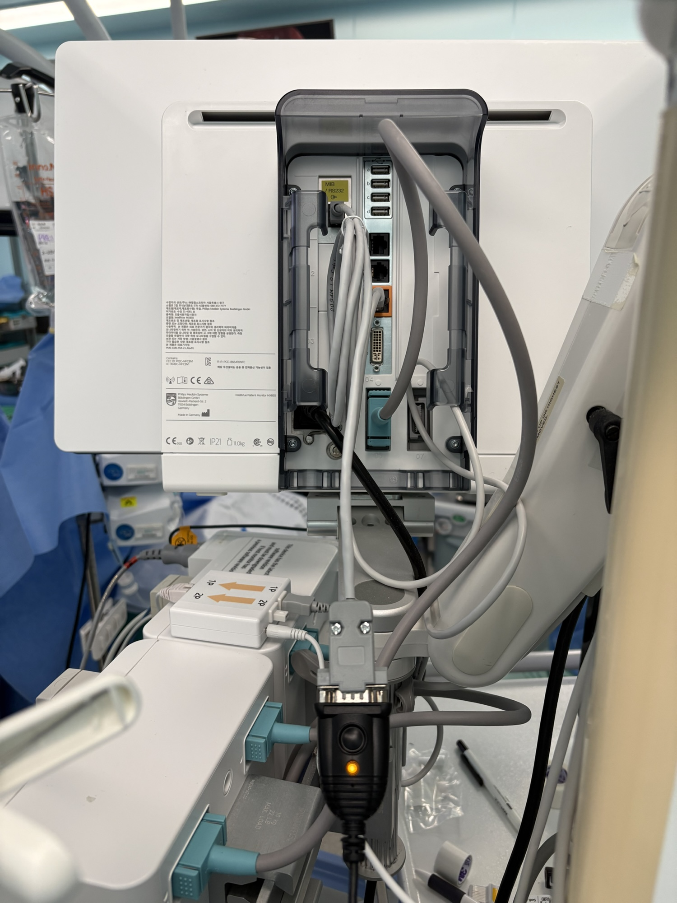
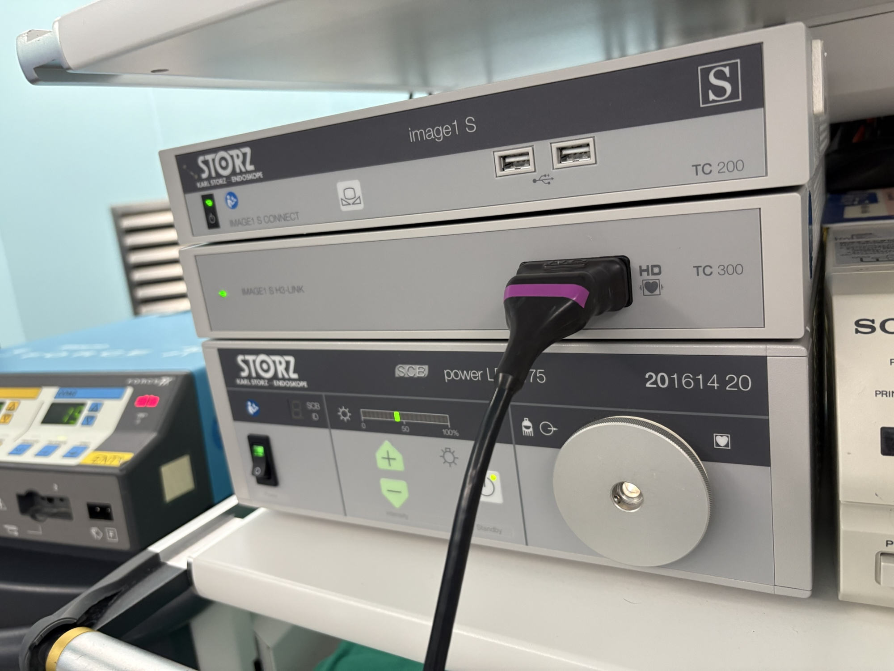
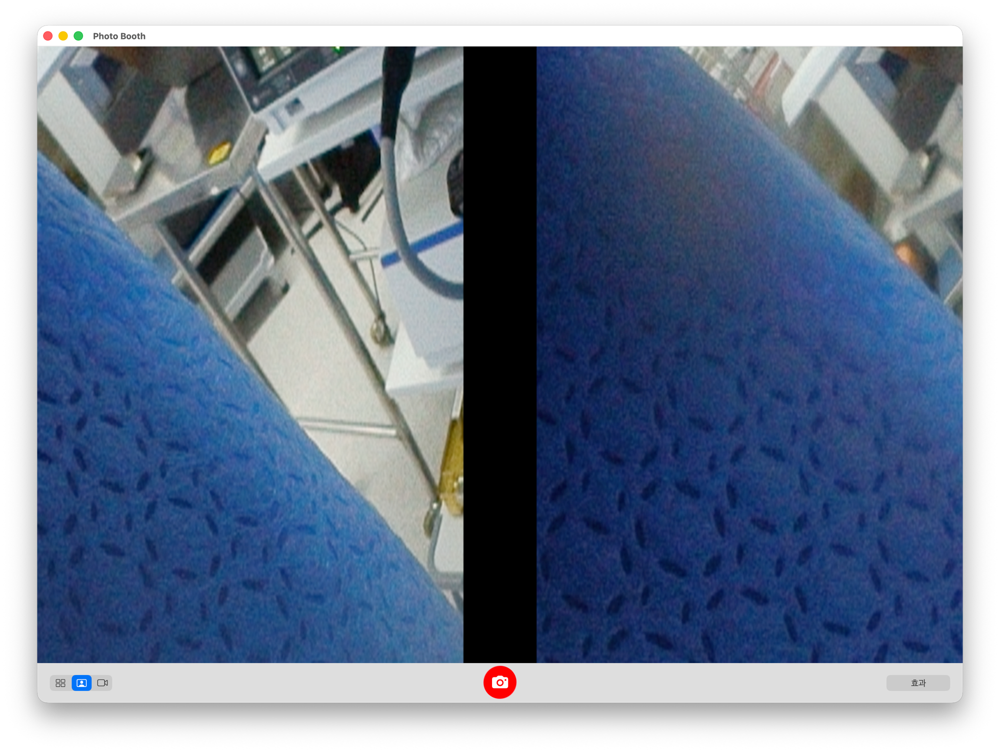
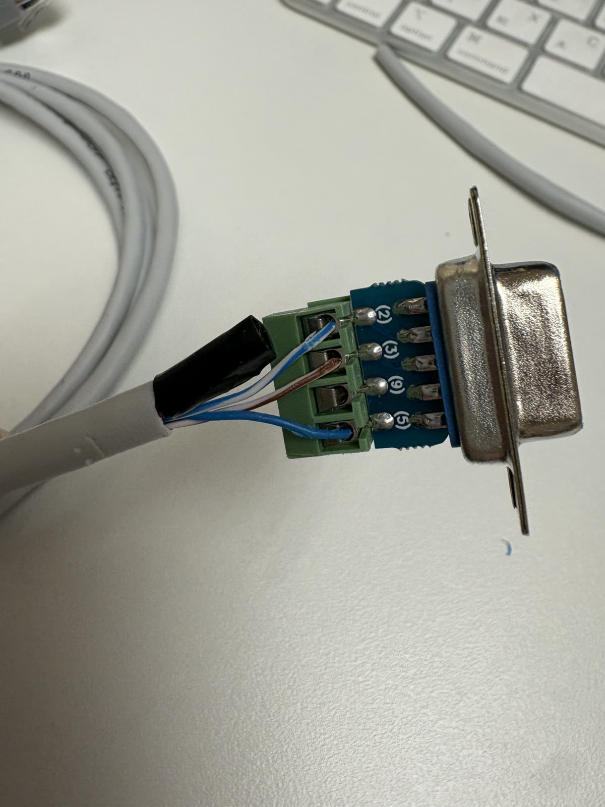
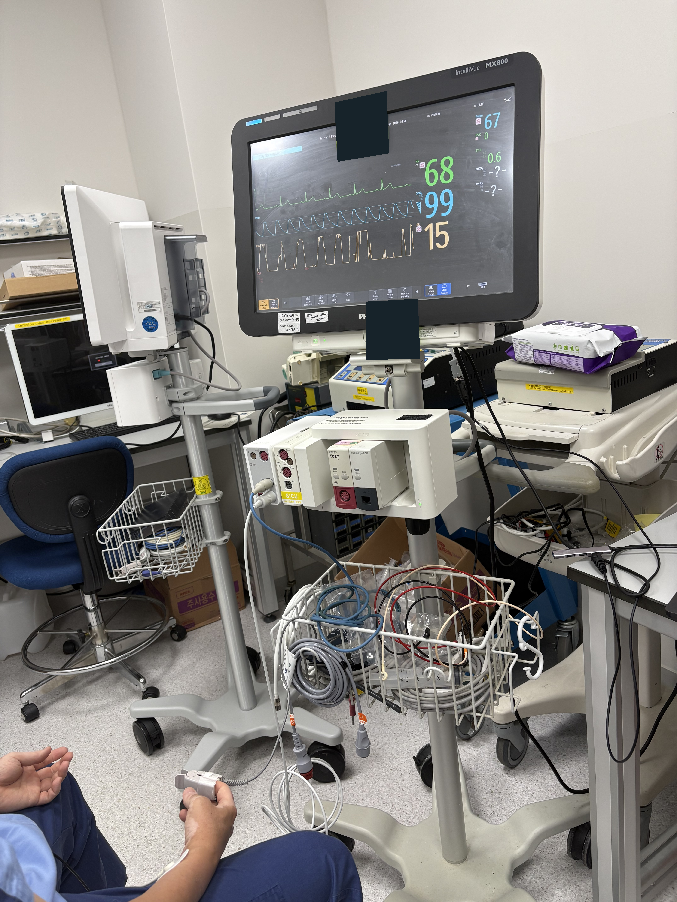

바이탈제작·시험 기록 2026.07–10
케이블 제작과
장비별 수신 기록
케이블 제작부터 장비별 수치·파형 수신까지. 통신 응답과 실제 바이탈 수신을 구분해 확인했습니다.
제작 과정 읽기PROJECTS / DEVELOPMENT
XR · 로봇 헤드 디스플레이 · iPhone 동작 데이터 수집 앱의 개발·시험 기록.
202602 — 10

바이탈제작·시험 기록 2026.07–10
케이블 제작부터 장비별 수치·파형 수신까지. 통신 응답과 실제 바이탈 수신을 구분해 확인했습니다.
제작 과정 읽기
영상 입력 — 준비 중연결·비교 기록 2026.04–10
장비별 영상 출력을 XR에 연결하고, 입력 설정과 실제 수신 해상도가 달라지는 조건을 확인했습니다.
시험 과정 읽기
한국형 ARPA-H · 로봇 헤드 디스플레이 · 2026.08–09
앱 3종 · 상태 API · Python 연동 파일

로봇 시연 데이터 수집 · 2026.05–06
녹화 동기화 · 그리퍼 보정 · 데이터 내보내기
36개의 주요 기록
캡처카드 라이브 입력을 거쳐 WebRTC 수신을 시작했습니다. 초기 반복 멈춤은 후속 개발 과제였습니다.
E02 · 확인 범위 — 준비 중1280×720·30fps 조건에서 Mac → Galaxy XR H.264, Vision Pro HEVC 경로를 시험했습니다.
제작·시험 과정 읽기 — 준비 중60fps 캡처와 앱의 30fps 송신 제한이 맞물려 생긴 인코딩 저하를 수정했습니다. 캡처를 30fps로 맞춘 뒤 6분 이상 구간에서 로그 freeze 0을 기록했습니다.
제작·시험 과정 읽기 — 준비 중보정과 시연 한 쌍을 HoMMI로 처리해 영상·깊이·위치·자세·그리퍼 폭을 하나의 데이터로 묶었습니다.
제작·시험 과정 읽기화면 갱신과 협업 데이터 처리 경로를 조정했습니다. 30초 Left Slave 비교에서 Pose 기록은 609 → 1,805, RGB는 50 → 151로 늘었습니다.
제작·시험 과정 읽기HR·SpO₂·혈압을 Mac에서 읽고 별도 WebSocket으로 XR에 전달하는 구성을 정했습니다. 생성 데이터 1Hz 전송부터 준비했습니다.
제작·시험 과정 읽기새 장비에 기존 DVI-D가 없어 사진 8장으로 SDI 포트를 확인했습니다. 기존 녹화 연결을 유지하는 SDI–HDMI–Elgato 경로를 준비했습니다.
제작·시험 과정 읽기 — 준비 중12G OUT1의 변환·캡처 경로에서 겹친 영상과 헤드 분리 시 컬러바를 확인했습니다.
제작·시험 과정 읽기 — 준비 중OTV-S700의 SBS 출력에서 Mac을 거쳐 Galaxy XR까지 연결하고 조건별 수신 기록을 남겼습니다. 입력 확보와 해상도 유지가 다음 개선 과제가 됐습니다.
E12 · 확인 범위 — 준비 중

Fix115200·DtOut1로 MDS 응답을 확인했지만 67초·189초 실행에서 수치 관측은 0건이었습니다.
제작·시험 과정 읽기CV-190 5세션과 OTV-S300 8세션을 분석했습니다. 주요 수신 해상도는 각각 1280×368과 1280×720이었습니다.
제작·시험 과정 읽기 — 준비 중63분 18초의 대응 로그를 분석했습니다. 약 60fps를 유지하면서 수신 해상도가 낮아진 뒤 복구되지 않은 구간을 찾았습니다.
제작·시험 과정 읽기 — 준비 중Single SBS에서 선택을 바꿔도 encode가 1280×720인 원인을 확인했습니다. 고정 축소와 대역폭 적응, 재연결 뒤 중복 통계를 구분했습니다.
제작·시험 과정 읽기 — 준비 중인식 문장 길이에 따른 글자 크기를 조정하고 카드 높이를 고정했습니다. 단위 테스트 47개를 통과하고 APK를 생성했습니다.
제작·시험 과정 읽기DB 재조회와 70–80ms 화면 진입 대기를 제거했습니다. 단위 테스트 65개를 통과하고 APK를 생성했습니다.
제작·시험 과정 읽기AC 전원 21분 13.769초 구간에서 약 59.82fps·20.102Mbps를 기록하고 HD OUT3·12G OUT2·3G 출력을 비교했습니다.
제작·시험 과정 읽기 — 준비 중실물 MX750의 DEMO 응답을 읽고 숫자 해석을 수정했습니다. 저장한 응답으로 Mac 화면을 재확인했습니다.
제작·시험 과정 읽기MX800의 영상 캡처와 수치 수신을 비교했습니다. 수치 경로는 405초·843 Poll·187,544바이트, 중단 후 자동 재연결 6회를 기록했습니다.
제작·시험 과정 읽기
음수 freshness age 처리와 sweep 표시를 수정했습니다. 화면 시험의 소실 프레임은 24/481 → 0/698이었습니다.
제작·시험 과정 읽기TestFlight 빌드를 업로드하고 새 Mac Studio에서 앱을 실행했습니다. 다음 날 Studio → Galaxy XR 바이탈 수치 표시를 확인했습니다.
제작·시험 과정 읽기10월 15일 재생 시험에서 버퍼를 1.024초로 늘린 뒤, 17일 DEMO를 45.057초 실행해 18,040샘플과 null/gap/tick 0을 기록했습니다.
제작·시험 과정 읽기합성 표적의 수신 스트림을 분석해 전송 조건별 화질을 비교했습니다. 사람의 가시성 평가는 다음 단계입니다.
E08 · 확인 범위 — 준비 중녹화 PC와 컨버터를 조사하고, 1920×1080·3840×1080 저장 파일의 속성을 기록했습니다.
제작·시험 과정 읽기 — 준비 중ECG 처리 수정 후 세 파형의 수신 로그를 확인했습니다. 착용 상태의 연속성 확인은 남겨 두었습니다.
제작·시험 과정 읽기